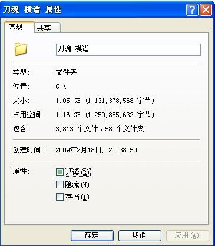

少帅流习题（5星级）高难
首页
茗弈阁
#1 少帅流习题（5星级）高难 作者：五子痴 发表时间：2009-5-26 19:18:11
=======上图对应的爱五子棋谱代码如下，以便你拆解：========
h8h9j10i9i10j8g9g10i8k7h10h7
======================================================出一道有难度的题！黑先如何杀！？此变化充分体现出了五子棋的奥妙 我整整拆了一下午才拆出来 精彩 真是太精彩了
［ 茗弈小刀 于 2009-5-26 21:01:37 时花20金币送鲜花一朵］
#2 Re:少帅流习题（5星级）高难 作者：茗弈如梦 发表时间：2009-5-26 19:28:25
可能,,,,好像,,,有人曾经发过地毯,,,,
#3 Re:少帅流习题（5星级）高难 作者：茗弈小刀 发表时间：2009-5-26 19:30:39
开什么玩笑！看清楚12位置。
#4 Re:少帅流习题（5星级）高难 作者：茗弈小刀 发表时间：2009-5-26 19:32:28
这个12能杀，那么这个10可能就废了。
#5 Re:少帅流习题（5星级）高难 作者：茗弈如梦 发表时间：2009-5-26 19:36:41
 确实看错了,,,不过他出成题肯定能杀
确实看错了,,,不过他出成题肯定能杀
#6 Re:少帅流习题（5星级）高难 作者：不知 发表时间：2009-5-26 20:18:36
 我以为是悬赏...
我以为是悬赏...
#7 Re:少帅流习题（5星级）高难 作者：茗弈出埃及记 发表时间：2009-5-26 20:34:20
这个12我没拆出来，有唯一防。
真的能地毯？我持怀疑态度，也可能是我水平有限，我拆了不止一下午，没有结果。。。
#8 Re:少帅流习题（5星级）高难 作者：苯酚 发表时间：2009-5-26 20:38:08
ShowPost.asp?ThreadID=6946
按风尘LS的意思，这个10就是必败的
#9 Re:少帅流习题（5星级）高难 作者：茗弈出埃及记 发表时间：2009-5-26 20:39:49
他扯淡的，扯了半天他也没扯出来这个10怎么地毯。。 ［ 茗弈小刀 于 2009-5-26 21:00:29 时花20金币送鲜花一朵］
#10 Re:少帅流习题（5星级）高难 作者：茗弈小刀 发表时间：2009-5-26 20:54:17
 应该能胜的吧，大家加油！红儿加油！
应该能胜的吧，大家加油！红儿加油！
#11 Re:少帅流习题（5星级）高难 作者：不知 发表时间：2009-5-26 21:03:05
 无聊发一下...
无聊发一下...
=======上图对应的爱五子棋谱代码如下，以便你拆解：========
h8h9j10i9i10j8g9g10i8k7h10h7f8
======================================================
#12 Re:少帅流习题（5星级）高难 作者：茗弈小刀 发表时间：2009-5-26 21:07:43
14=E9,然后呢？
#13 Re:少帅流习题（5星级）高难 作者：不知 发表时间：2009-5-26 21:13:29
提示个13就可以了..后面拿小黑就可以杀了..
#14 Re:少帅流习题（5星级）高难 作者：茗弈出埃及记 发表时间：2009-5-26 21:30:24
哈，楼上真搞笑，我按这个13拆了两路走法全有唯一防。
麻烦你发的具体点，这个13之后用小黑是绝对杀不出来的。
#15 Re:少帅流习题（5星级）高难 作者：不知 发表时间：2009-5-26 21:31:12
 ...我一直很搞笑~
...我一直很搞笑~
#16 Re:少帅流习题（5星级）高难 作者：茗弈出埃及记 发表时间：2009-5-26 21:32:36
不，是三路走法全有唯一防。
回小刀师傅：我正在努力攻克，相信可以地毯的。
#17 Re:Re:少帅流习题（5星级）高难 作者：兔子哥哥 发表时间：2009-5-27 0:34:37
=======上图对应的爱五子棋谱代码如下，以便你拆解：========
h8h9j10i9i10j8g9g10i8k7h10h7f8e7i7f10k10l10j9
======================================================
#18 Re:少帅流习题（5星级）高难 作者：不知 发表时间：2009-5-27 0:50:22
...我汗一下..最后发张搞笑图..以后不发了..省得挨讲..
=======上图对应的爱五子棋谱代码如下，以便你拆解：========
h8h9j10i9i10j8g9g10i8k7h10h7f8e7i7f10l6
======================================================
#19 Re:少帅流习题（5星级）高难 作者：刀魂 发表时间：2009-5-27 1:16:07
简单杀之。。。无语
=======上图对应的爱五子棋谱代码如下，以便你拆解：========
h8h9j10i9i10j8g9g10i8k7h10i7
======================================================和这个12 杀法大同小异
#20 Re:少帅流习题（5星级）高难 作者：没事摆石子玩 发表时间：2009-5-27 11:25:09
刀魂你个弱人在这胡说八道啥？估计你基本的棋理都不懂，拿个破软下棋罢了。
#21 Re:少帅流习题（5星级）高难 作者：茗弈小刀 发表时间：2009-5-27 11:31:14
兔子哥哥的图，20档在上边呢？比如5或3上边，3上边的上边。。。。。。没看到连续进攻做杀的手段呢。
#22 Re:少帅流习题（5星级）高难 作者：冷面孤煞 发表时间：2009-5-27 12:14:09
=======上图对应的爱五子棋谱代码如下，以便你拆解：========
h8h9j10i9g9i7i10k7h10g10i8j8
======================================================其实是一打的这个变化
#23 Re:少帅流习题（5星级）高难 作者：冷面孤煞 发表时间：2009-5-27 12:16:21
=======上图对应的爱五子棋谱代码如下，以便你拆解：========
h8h9j10i9i10j8g9g10i8k7h10i7h7
======================================================这个13，呵呵
#24 Re:少帅流习题（5星级）高难 作者：冷面孤煞 发表时间：2009-5-27 12:23:27
=======上图对应的爱五子棋谱代码如下，以便你拆解：========
h8h9j10i9i10j8g9g10i8k7h10i7h7j9k9i11f8e7j5e8e9g7f9i6f10f11d8g11e11d12c9d9d10b8c7b6c11b12c10c8e10b10d11
======================================================这样可以？
#25 Re:少帅流习题（5星级）高难 作者：茗弈小刀 发表时间：2009-5-27 12:27:13
请看清楚12的位置，你这个N早论坛就终结了。楼主的问题是12在1下边。
#26 Re:Re:少帅流习题（5星级）高难 作者：刀魂 发表时间：2009-5-27 12:39:25
引用：
原文由 没事摆石子玩 发表于 2009-5-27 11:25:09 :
刀魂你个弱人在这胡说八道啥？估计你基本的棋理都不懂，拿个破软下棋罢了。
我也知道我很弱，但是我有的，你未必有：

顺便说下，名教 的谱，和 胡子帮 的谱，我基本有，不要问我怎么来的。。。有些自己研究的谱，就没有发上来了，本来我想继续在论坛发谱的，
但是鉴于有些b在我发了谱之后，竟然还鸡蛋里挑骨头，所以，我以后绝不发谱上来，教了别人蠢了自己，g 名少 也有同感，我终于理解小刀
为什么不轻易给别人谱了，所以，我现在也学乖了。谱这东西，怎么说呢。。。算了，还是不说了吧
#27 Re:少帅流习题（5星级）高难 作者：没事摆石子玩 发表时间：2009-5-27 12:42:37
你也好意思？搞笑吧？杀不出来就闭嘴，要显摆别的地儿去！
#28 Re:少帅流习题（5星级）高难 作者：没事摆石子玩 发表时间：2009-5-27 12:49:22
嘿，我的谱至少有5，6GB吧，我不懂那能说明什么。
#29 Re:少帅流习题（5星级）高难 作者：忧郁的双眼 发表时间：2009-5-27 12:50:56
胡子帮的谱你都有
水货集中营哦
#30 Re:少帅流习题（5星级）高难 作者：忧郁的双眼 发表时间：2009-5-27 12:57:54
#31 Re:少帅流习题（5星级）高难 作者：samaki 发表时间：2009-5-28 2:34:00
=======上图对应的爱五子棋谱代码如下，以便你拆解：========
h8h9j10i9i10j8g9g10i8k7h10h7i7f10i11j12h11
======================================================这样有防么?
#32 Re:少帅流习题（5星级）高难 作者：samaki 发表时间：2009-5-28 2:39:10
好象不行
#33 Re:少帅流习题（5星级）高难 作者：极地剑客 发表时间：2009-5-28 7:23:34
结局很暴力~
#34 Re:少帅流习题（5星级）高难 作者：游戏人间 发表时间：2009-6-9 15:53:11
 这个真的杀了吗
这个真的杀了吗
#35 Re:少帅流习题（5星级）高难 作者：茗弈如梦 发表时间：2009-6-9 18:34:13
等楼主发答案了,,或者给点小提示,,没人能弄对
#36 Re:少帅流习题（5星级）高难 作者：飞飞 发表时间：2009-6-9 20:38:35
很多人都都杀不出来。我是没杀出来。
#37 Re:少帅流习题（5星级）高难 作者：流逝 发表时间：2009-6-9 21:32:32
笑死我了 刀魂你的谱松月123打都终结了 哈哈太强大了
还有 不是我小看你 你那岚月地毯估计也是假冒的 我只要你发一路上来我就信了
=======上图对应的爱五子棋谱代码如下，以便你拆解：========
h8i9i6g8g9i7h10i11i10j10e9h12k9h11e10e11f9f11g11f14g13h9e12j9j7j11j12l11k11k10m12l9i12l10l12k12m10
======================================================这是一路没啥价值的变化 很多人都能杀得出来 但是能全部地毯的肯定是很少数的一部分人 你有这路的完整地毯吗？没有就别发个破图来吹牛
就1个g的谱也抓个图到这来显摆，唉
#38 Re:少帅流习题（5星级）高难 作者：wrwak 发表时间：2009-6-9 21:35:07
刀魂的实力是无法用数字衡量的。请深刻理解。
#39 Re:少帅流习题（5星级）高难 作者：不知 发表时间：2009-6-9 21:36:07
流总你那么激动?
#40 Re:少帅流习题（5星级）高难 作者：越狱行辕 发表时间：2009-6-9 21:36:10
刀大师 寒星一二三打都终结了
#41 Re:少帅流习题（5星级）高难 作者：流逝 发表时间：2009-6-9 21:36:29
噢 原来刀魂大师连明星和山月都终结了啊，看来真是五子棋第一人了 哈哈
嗯，，还有恒寒也终结了完了啊 你要再说你终结完了的话我再摆出一路的变化让你发上来 嘿嘿 顺便再给你一个月的时间让你现场去做
#42 Re:少帅流习题（5星级）高难 作者：wrwak 发表时间：2009-6-9 21:37:33
让你们见识一下刀魂绝密研究
#43 Re:少帅流习题（5星级）高难 作者：歇菜了 发表时间：2009-6-9 21:38:12
流逝个弱人什么理解能力,我们叫流星的开局刀魂大师那叫做长星,我们叫山月的开局刀魂大师那叫残月,同理可得,我们叫花月的开局,刀魂大师那叫松月
#44 Re:Re:少帅流习题（5星级）高难 作者：wd1988 发表时间：2009-6-9 21:52:01
引用：
原文由 流逝 发表于 2009-6-9 21:32:32 :
笑死我了 刀魂你的谱松月123打都终结了 哈哈太强大了
还有 不是我小看你 你那岚月地毯估计也是假冒的 我只要你发一路上来我就信了
=======上图对应的爱五子棋谱代码如下，以便你拆解：========
h8i9i6g8g9i7h10i11i10j10e9h12k9h11e10e11f9f11g11f14g13h9e12j9j7j11j12l11k11k10m12l9i12l10l12k12m10
======================================================这是一路没啥价值的变化 很多人都能杀得出来 但是能全部地毯的肯定是很少数的一部分人 你有这路的完整地毯吗？没有就别发个破图来吹牛
就1个g的谱也抓个图到这来显摆，唉
流总，你是说这个么？你说这个谱好不好看呢？

#45 Re:少帅流习题（5星级）高难 作者：不知 发表时间：2009-6-9 21:54:31
好多C....
#46 Re:少帅流习题（5星级）高难 作者：wd1988 发表时间：2009-6-9 21:56:44
要不怎么叫地毯。。。新岚地毯难道还是秘密么。。。
#47 Re:少帅流习题（5星级）高难 作者：不知 发表时间：2009-6-9 21:58:13
谁把地毯全部传一份给我?3Q
#48 Re:少帅流习题（5星级）高难 作者：wd1988 发表时间：2009-6-9 21:59:12
注意版权问题，版权问题。。。
#49 Re:少帅流习题（5星级）高难 作者：流逝 发表时间：2009-6-9 22:20:26
你把37之后的地毯发上来给大家看看啊 抓个图出来问我好不好看？还是之后比较容易做完的一个分支 你当我好骗还是大家好骗啊？
#50 Re:少帅流习题（5星级）高难 作者：越狱行辕 发表时间：2009-6-9 22:40:51
流逝大师能问下你做的谱上面写着c3 c5啥的啥意思？为啥不是c1 c2 呢？
#51 Re:少帅流习题（5星级）高难 作者：流逝 发表时间：2009-6-9 22:44:00
。。。。我做谱习惯把c1 c2标记成最强或者次强的点 一般什么 c4 c5就是比较简单的了
#52 Re:少帅流习题（5星级）高难 作者：wd1988 发表时间：2009-6-9 23:31:08
流逝你说发谱你怎么不发，你可以问一个最难的分支，我给不出正解就回去重修五子棋三年
 岚月.rar
岚月.rar ［ 茗弈小刀 于 2009-6-10 15:47:10 时花20金币送鲜花一朵］
#53 Re:少帅流习题（5星级）高难 作者：流逝 发表时间：2009-6-9 23:43:12
楼上的你发个毛巾上来干啥，我没说这路杀不掉吧，而且也没让你发。我只是看不惯某人吹牛出个题目来揭露一下他罢了，你这么激动干嘛
岚月地毯本来就没什么问题，但是做完真正的地毯谱需要耐心和时间的。我就没这耐心，就这37之后的地毯我还是找天羽老师要来的，因为光扫就得用好几天的时间，而且全是重复的杀法。
#54 Re:少帅流习题（5星级）高难 作者：wd1988 发表时间：2009-6-9 23:47:13
我其实没有针对你的意思，只是想说这个地毯有的人其实不少。结果你非要顶我一下。你自己看看也知道了，这个形状的地毯，是不是真的，一看便知
#55 Re:少帅流习题（5星级）高难 作者：流逝 发表时间：2009-6-9 23:51:18
我顶的是你吗。。。。你误会了吧
这个地毯确实不少人有，但是却不是每个人都有。嘿嘿 我就肯定刀魂大师没有
#56 Re:少帅流习题（5星级）高难 作者：wd1988 发表时间：2009-6-9 23:53:27
这真的难说了，这个谱是我一个兄弟给我的，我兄弟据说是刀魂的小师父，刀魂说他小师父什么谱都给刀魂的。。。。。。希望没有吧
而且你差点撺掇我把37地毯谱发上来了，你这不是陷我与不义么。。。你前脚激我把谱发了，后脚天羽就要找我麻烦
#57 Re:少帅流习题（5星级）高难 作者：流逝 发表时间：2009-6-10 0:10:08
你再看一次我在49楼说的话是否有针对你的意思。。。。。嘿嘿不和你扯了 我继续等刀魂大师发谱出来给大家欣赏
#58 Re:少帅流习题（5星级）高难 作者：忧郁的双眼 发表时间：2009-6-10 0:17:32
强力围观。。。
#59 Re:少帅流习题（5星级）高难 作者：wd1988 发表时间：2009-6-10 12:39:27
"你当我好骗还是大家好骗啊？"不是我要说，这句话叫什么话？你意思不就是我发的图是骗你的了？
#60 Re:少帅流习题（5星级）高难 作者：游戏人间 发表时间：2009-6-10 12:50:40
我现在有点怀疑这个题目是错误的了。。。
#61 Re:Re:少帅流习题（5星级）高难 作者：堂堂 发表时间：2009-6-10 14:09:40
引用：
原文由 wd1988 发表于 2009-6-10 12:39:27 :
"你当我好骗还是大家好骗啊？"不是我要说，这句话叫什么话？你意思不就是我发的图是骗你的了？
别人说的是刀魂，你瞎掺乎个啥劲
#62 Re:少帅流习题（5星级）高难 作者：堂堂 发表时间：2009-6-10 14:16:21
这人有前科.别人说不好杀的他一定要摆出来，跟本不关他的事，不止一次了
#63 Re:Re:少帅流习题（5星级）高难 作者：Solmyr 发表时间：2009-6-10 14:30:58
引用：
原文由 堂堂 发表于 2009-6-10 14:16:21 :
这人有前科.别人说不好杀的他一定要摆出来，跟本不关他的事，不止一次了
容忍别人炫耀一下自己的能力和研究嘛~堂堂兄不要在意了~反正好东西下了就是~不是好东西的放那里好了~有点期待在正式比赛上跟这位吴迪同志请教一局~
#64 Re:少帅流习题（5星级）高难 作者：流逝 发表时间：2009-6-10 14:31:42
堂堂老师
我确实说的是刀魂啊，之前你有发过图吗。。难道你是用刀魂的名字发的图，我只能这么理解了。。。。
［ 茗弈小刀 于 2009-6-10 15:47:31 时花20金币送鲜花一朵］
#65 Re:少帅流习题（5星级）高难 作者：茗弈小刀 发表时间：2009-6-10 15:49:07
几位老师别争了啊，大家心平气和的说吧，看来是有误会呢。逝儿乖少说2句哈。
#66 Re:少帅流习题（5星级）高难 作者：安娜制作所 发表时间：2009-6-11 10:17:30
等师伯掉陷饼
#67 Re:少帅流习题（5星级）高难 作者：陨落之城 发表时间：2009-6-14 23:51:15
顶一下，防沉
#68 Re:少帅流习题（5星级）高难 作者：安娜制作所 发表时间：2009-6-15 16:28:44
师伯的陷饼咋还米掉下来捏!??
#69 Re:少帅流习题（5星级）高难 作者：测试规则 发表时间：2009-6-15 22:56:58
跑题了，大家
#70 Re:少帅流习题（5星级）高难 作者：啊呆 发表时间：2009-12-16 14:46:37
N个月过去了 还没结果呐。。。
#71 Re:少帅流习题（5星级）高难 作者：小帮帮 发表时间：2009-12-16 16:29:13
楼主不是怀疑题目发错了吗？到底错没错？难道又唯一了？
#72 Re:少帅流习题（5星级）高难 作者：鬃毛 发表时间：2009-12-17 15:15:13
=======上图对应的爱五子棋谱代码如下，以便你拆解：========
h8h9j10i9i10j8g9g10i8k7h10h7i11j12h11
======================================================大概说的是这个吧
#73 Re:少帅流习题（5星级）高难 作者：茗弈小刀 发表时间：2009-12-17 15:57:07
没对好像，大家继续，这个应该可以杀的。［此帖子已被 茗弈小刀 在 2010-1-7 17:42:09 编辑过］
#74 Re:少帅流习题（5星级）高难 作者：茗弈宽容 发表时间：2010-1-7 17:41:26
 找到唯一防，汗，看来杀不了啦！
找到唯一防，汗，看来杀不了啦！
#75 Re:少帅流习题（5星级）高难 作者：忧郁的双眼 发表时间：2010-1-7 17:52:54
挖坟不道德。。。
#76 Re:少帅流习题（5星级）高难 作者：日月之合 发表时间：2010-1-10 18:36:50
你不要累我了好不好我压根就拆不了・真能赢的话，发给我看看好了
#77 Re:少帅流习题（5星级）高难 作者：刀魂 发表时间：2010-1-11 18:10:55
呵呵，这个帖子，怎么那么多 议论 刀魂啊，汗一个，流总，顺便说一下子哈，岚月2打全终结谱 我保证我比你
先有，至于怎么来的，你猜。。。呵呵
大家还是 专心做题吧，这道题，应该没有解的，如果有，只有佩服2字啦！！！
#78 Re:少帅流习题（5星级）高难 作者：忧郁的双眼 发表时间：2010-1-11 23:29:34
流逝是研究山岚起家的